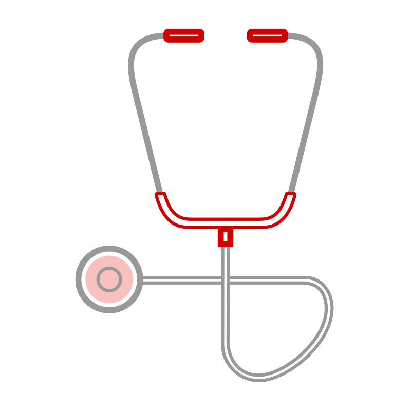
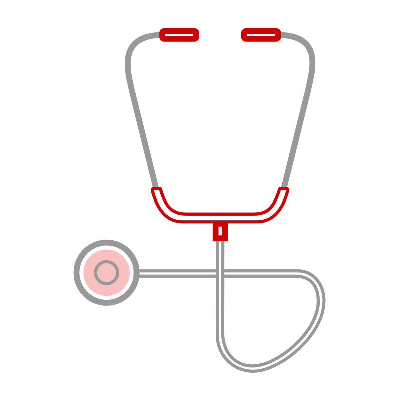
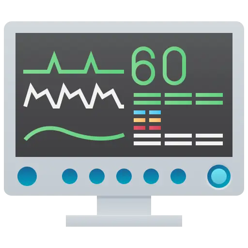

Health Services
Facilitates quick decision-making by linking directly to booking or further information
Our range of services are designed to keep you and your loved ones healthy, informed, and cared for
Facilitates quick decision-making by linking directly to booking or further information
Provides practical, easy-to-follow tips and strategies to improve overall well-being
Offers convenient and quick access to medical advice without the need to leave home
Improves overall response time by offering real-time directions to medical centers
Tracks long-term health goals and makes it easier to monitor improvements
Promotes informed decision-making about treatments and lifestyle changes